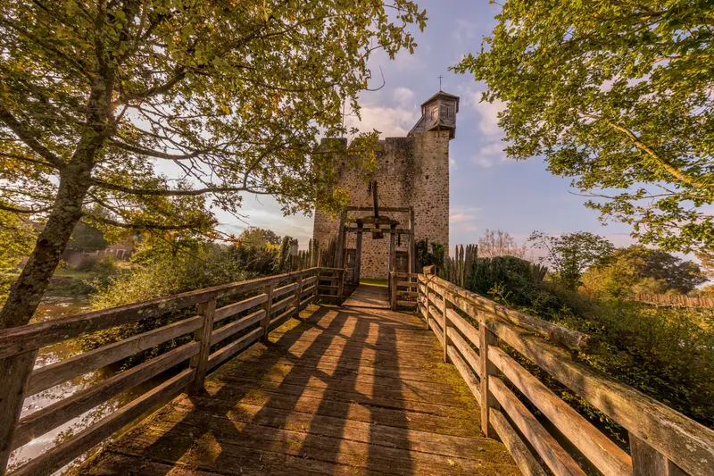
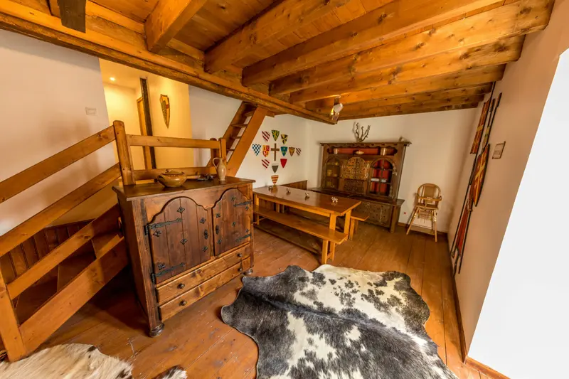
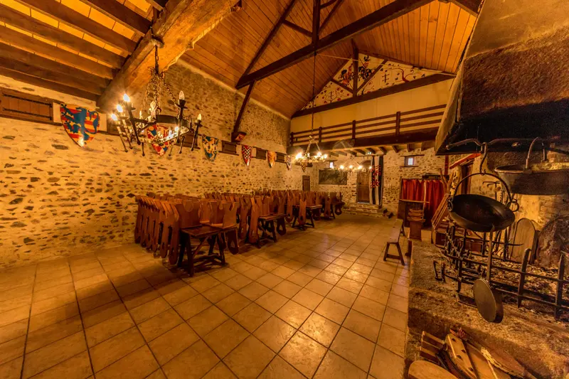
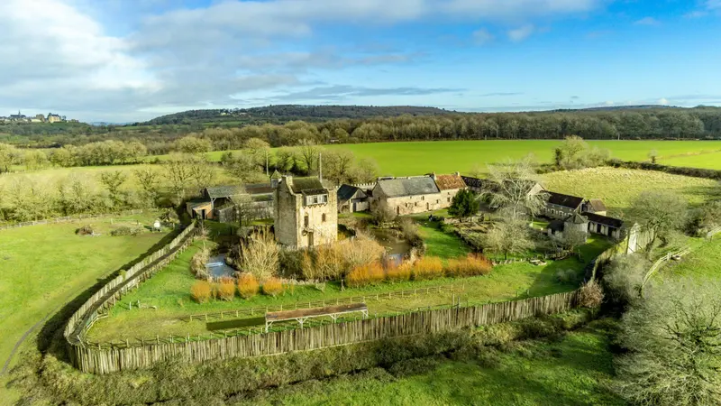
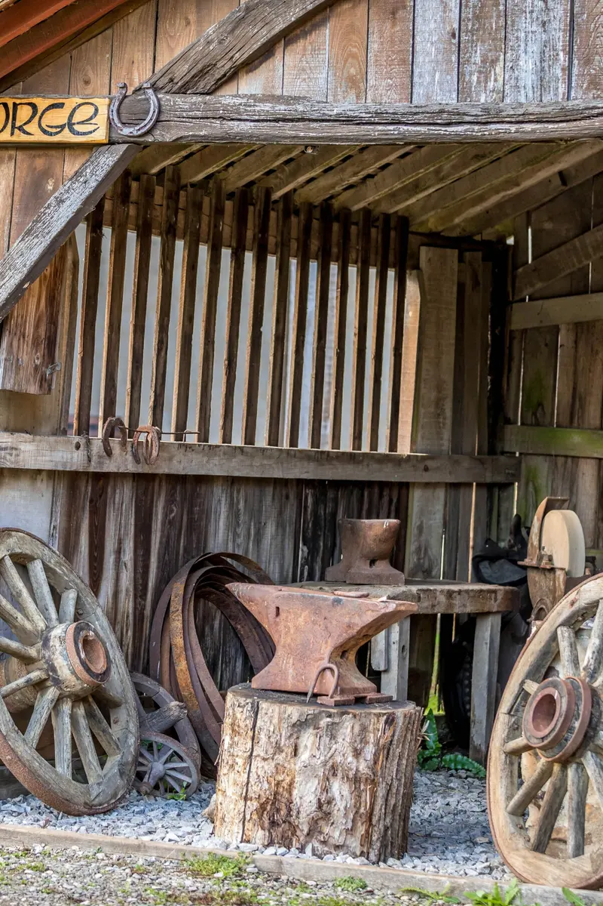
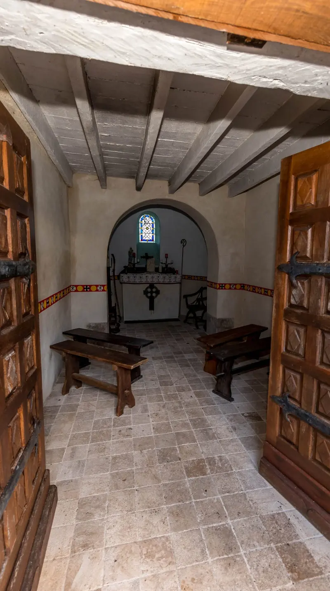
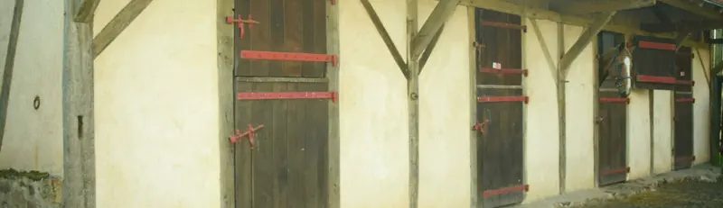
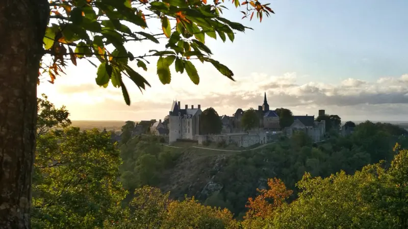
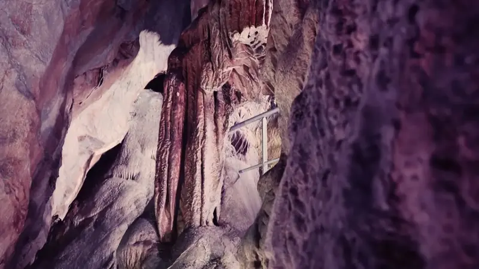
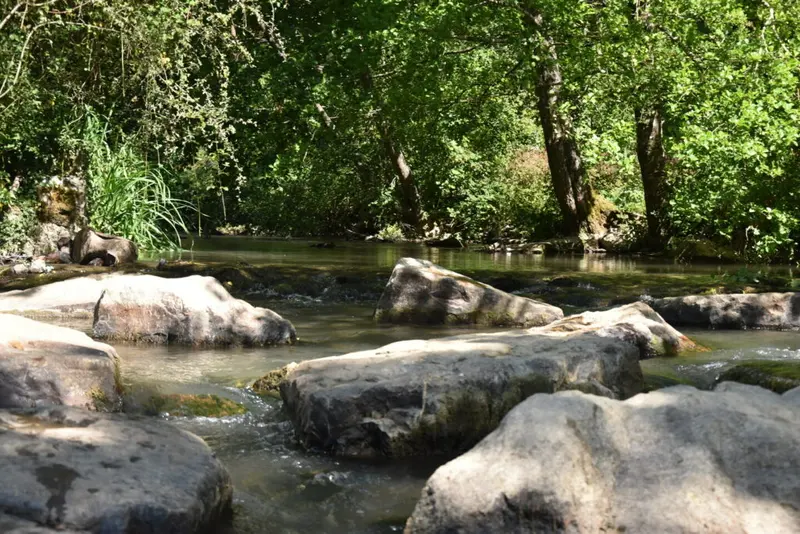

Chambre n° 1 · 14 m²
Chambre Tristan
Une tapisserie au-dessus du lit, un coffre en bois sculpté, des peaux de mouton au sol et une fenêtre géminée en pierre qui filtre la lumière du matin.
Dès 125 € la nuit
Voir la chambre TristanTrois chambres dans la reconstitution d’une ferme fortifiée du XIIIe siècle. Edwige et Franck vous y reçoivent, à mi-chemin entre Laval et Le Mans.
Un donjon entouré de douves, un pont-levis, une forge, une chapelle : Clairbois est la reconstitution grandeur nature d’un petit domaine seigneurial, posée au milieu des prés à la sortie de Sainte-Suzanne.
Nous y avons aménagé trois chambres d’hôtes. Le décor est médiéval — coffres sculptés, tapisseries, fer forgé, peaux de bête — mais le confort est bien d’aujourd’hui : salle de bain privative, télévision, plateau thé-café. Le matin, après le petit-déjeuner, vous visitez le donjon avant tout le monde.

Tristan, Iseult et Clairbois : trois chambres pour deux, chacune avec son caractère. Toutes comprennent le petit-déjeuner et la visite du donjon.
Une tapisserie au-dessus du lit, un coffre en bois sculpté, des peaux de mouton au sol et une fenêtre géminée en pierre qui filtre la lumière du matin.
Dès 125 € la nuit
Voir la chambre TristanLe lit fait face à la salle de bain, séparée par de vieilles poutres. Aux murs, des calligraphies peintes à la main ; au sol, un parquet clair.
Dès 125 € la nuit
Voir la chambre IseultLa dernière-née. Le blason rouge et or veille sur le lit, un mur de pierre blanche monte en escalier et une banquette se niche dans l’embrasure de la fenêtre.
Dès 125 € la nuit
Voir la chambre Clairbois

Murs de pierre, charpente apparente, lustres forgés et cheminée monumentale : une salle de réception qui n’a pas besoin de décoration.
Elle se loue avec une cuisine professionnelle complète — trois fours, chambre froide, lave-vaisselle — pour votre traiteur ou votre équipe.
Le domaine se visite. D’avril à août, le deuxième week-end du mois, les Féodales de Clairbois y font revivre le quotidien du XIIIe siècle.



Visiter le domaine et connaître les dates des fêtes médiévales
Le domaine accueille les cavaliers et leur monture. Les chevaux passent la nuit dans les boxes à colombages, vous dans l’une des chambres, et les chemins équestres des Coëvrons partent presque du portail.

Note moyenne des séjours réservés sur Booking.com. Quelques mots laissés par nos hôtes :
« Dame Edwige nous a accueillis comme des seigneurs et a su remplir d’étoiles les yeux de notre petite fille de 4 ans. »
« Nous n’y avons passé qu’une nuit mais nous y reviendrons sûrement ! Un accueil et un lieu exceptionnels. »
« Des propriétaires charmants et accueillants, un site magnifique. Un moment hors du temps où je reviendrai avec joie. »
La cité médiévale est à 7 minutes, les grottes de Saulges à un quart d’heure. De quoi remplir un week-end sans reprendre l’autoroute.

L’un des Plus Beaux Villages de France, la seule place forte qui ait tenu tête à Guillaume le Conquérant.

Deux grottes ouvertes à la visite, un canyon calcaire et des sentiers le long de l’Erve.

Une balade au fil de l’Erve, d’un ancien moulin à l’autre, jusqu’au belvédère du Tertre Ganne.
Oui. Le petit-déjeuner est compris dans la nuitée et, sur réservation, nous préparons une table d’hôtes inspirée de la cuisine médiévale. Prévenez-nous au moment de réserver votre chambre.
Trois chambres pour deux personnes : Tristan (14 m²), Iseult (13 m²) et Clairbois (14 m²). Chacune a sa salle de bain privative, la télévision et un plateau thé-café.
Les arrivées se font entre 17 h et 22 h, les départs entre 8 h et 12 h. Si votre train ou votre route vous fait arriver plus tôt, appelez-nous.
D’avril à août, le deuxième week-end de chaque mois, l’association La Mesnie de la Ferté Clairbois organise les Féodales de Clairbois : artisans, campements et troupes de reconstitution du XIIIe siècle animent le domaine.
Les hôtes des chambres stationnent à l’intérieur du domaine. Les jours de fête, un parking fléché accueille le public avant l’entrée.
Les chiens et chats ne sont pas admis dans les chambres. Les cavaliers, en revanche, peuvent venir avec leur cheval : le domaine dispose de boxes.
À Sainte-Suzanne-et-Chammes (53270), en Mayenne, à mi-chemin entre Laval et Le Mans, à une dizaine de kilomètres de l’autoroute A81 et de la gare d’Évron.
La réservation se fait en ligne sur Booking.com : disponibilités et tarifs s’affichent tout de suite. Une question avant de réserver ? Appelez-nous.